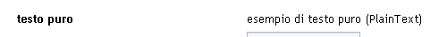

E' un widget di visualizzazione di dati testuali.
Il widget completo prevede una label ed il campo di visualizzazione associato, che è semplicemente il testo corrispondente al valore associato al widget (da qui il nome di PlainText).
La label può essere, in casi particolari, vuota
| cod. | nome | descrizione |
|---|---|---|
| apparenza grafica | ||
| WTXT004 | formattazione | Formattazione del testo (allineato sx, centrato, ...) |
| WTTXT005 | testo completo | Modalità di visualizzazione di dati che eccedono la dimensione visibile del campo (es. doppio click sul campo per visualizzare l'intero campo in modo espanso o scroll del contenuto mantenendo fissa la dimensione grafica) |
| WTXT006 | tooltip a comparsa | Comparsa del tooltip al passaggio del cursore sulla label (rif. Tooltip ) |
| WTXT008 | label | Il widget è tipicamente corredato da una etichetta testuale che permette di identificarlo all'interno della schermata. In genere il testo (o una eventuale immagine) sono scelti in modo da descrivere il contenuto informativo del widget. In alcuni casi particolari l'etichetta potrebbe essere assente. (rif. Label ) |
| dinamica di interazione | ||
| WTXT001 | copy | copia del contenuto testuale |
| WTXT002 | visibilità a comando | Modalità invisibile/visibile a comando |
| WTXT003 | profilazione della visibilità | Modalità invisibile/visibile a fronte di regole associate al profilo dell'utente collegato |
| struttura | ||
| WTXT007 | includibilità in pannelli | Il widget può essere contenuto nei seguenti pannelli:
|
|  |
| esempio di plain text |
Nella tabella seguente è riportato il grado di implementazione delle varie caratteristiche/funzioni dell'elemento PlainText nelle differenti implementazioni.
| cod | feature | guigen | |||
|---|---|---|---|---|---|
| 1.5.0 | 1.6.0 | ||||
| neutral-base | neutral-arricchita | neutral-base | neutral-arricchita | ||
| apparenza grafica | |||||
| WTXT004 | formattazione | ||||
| WTTXT005 | testo completo | ||||
| WTXT006 | tooltip a comparsa | ||||
| WTXT008 | label | ||||
| dinamica di interazione | |||||
| WTXT001 | copy | ||||
| WTXT002 | visibilità a comando | ||||
| WTXT003 | profilazione della visibilità | ||||
| struttura | |||||
| WTXT007 | includibilità in pannelli | ||||